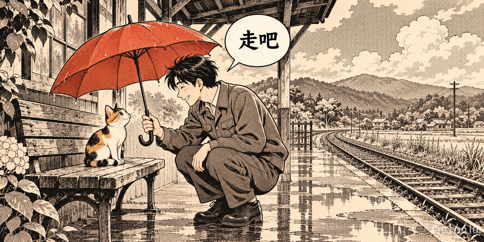

Page + boxes页面与框
A source page and (box, Chinese text) pairs define the edit.输入原图和若干「位置框 + 中文文本」。
A 119M-parameter diffusion transformer trained from scratch to render Chinese text into Japanese manga pages while preserving the artwork around it.一个从零训练的 1.19 亿参数扩散 Transformer，把中文写入日文漫画页，同时尽量保留周围画面。

The source page anchors the flow. Glyphs enter as extra channels, and overlapping tiles keep the edit local.原图作为流的锚点；字形图作为额外通道输入；重叠分块让修改保持在局部。
A source page and (box, Chinese text) pairs define the edit.输入原图和若干「位置框 + 中文文本」。
Plain-font glyphs are pixel-unshuffled into extra channels.标准字体字形折叠进额外输入通道。
A DiT generates a page, then a mask keeps the edit local.DiT 生成页面，再由 mask 将合成限制在局部。
A soft mask composites generated regions with the source page.软 mask 将生成区域与原图重新合成。
The visual goal is controlled local compositing: generate the page, then blend only requested regions back into the source.视觉目标是可控的局部合成：先生成页面，再只把请求区域与原图混合。
Historical project results; not independently rerun during this packaging pass.历史项目评测结果；本次整理没有独立重跑。
| Image under test被测图像 | CJK accuracy汉字准确率 | Exact lines整行全对 |
|---|---|---|
| Japanese source page (floor)日文原图（下限） | 4.9% | 0.7% |
| Real-only training · v2仅真实数据 · v2 | 60.7% | 29.0% |
| + synthetic variants · v3+ 合成变体 · v3 | 72.1% | 46.0% |
| Real Chinese page through VAE (ceiling)真实中文页经 VAE（上限） | 98.1% | 94.7% |
Code and tests ship here; training data is not included. Published weights are available separately, with third-party VAE terms documented in the model card.仓库包含代码和测试，不包含训练数据。权重单独发布；第三方 VAE 条款见模型卡。
pip install -r requirements.txt
python translate_page.py page.png regions.json out.png --weights weights/mangatrans-v3